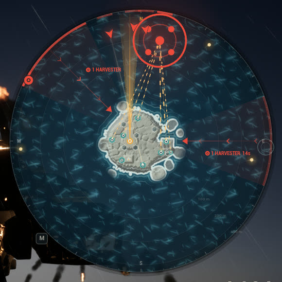
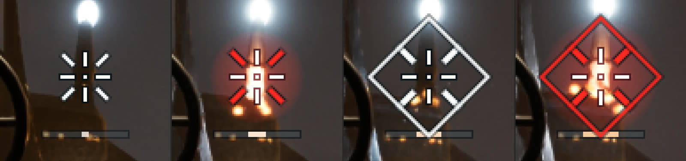
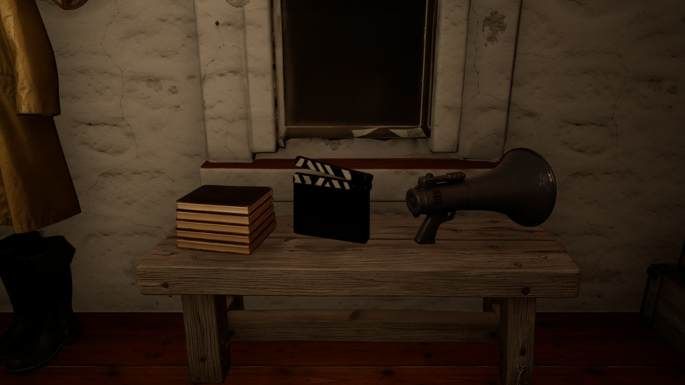
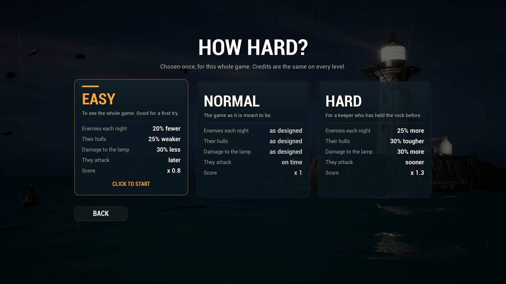
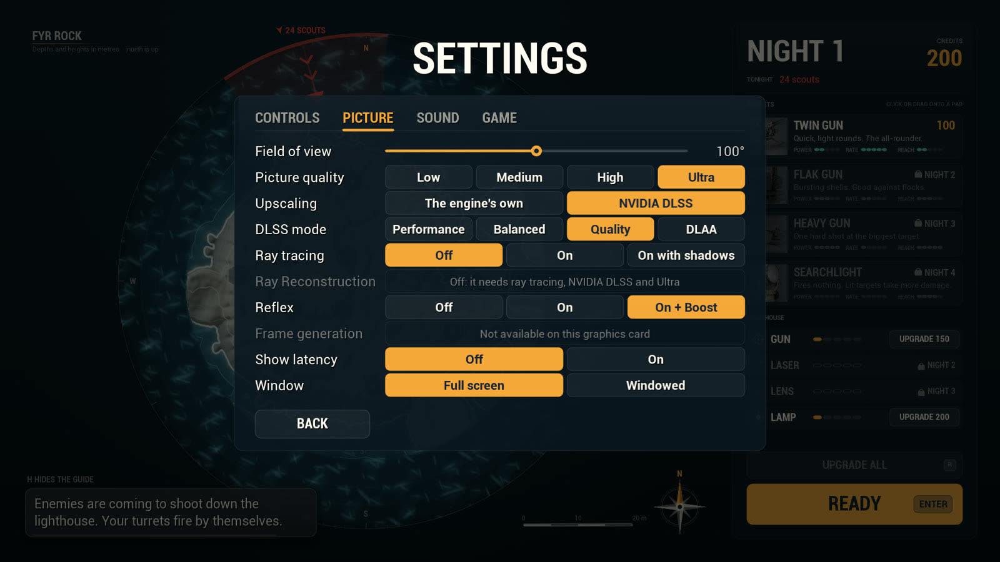
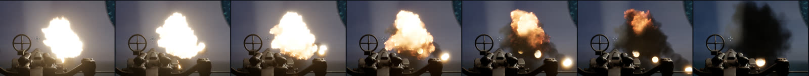
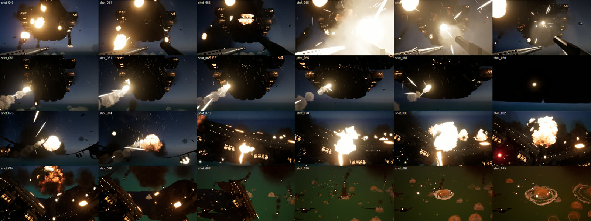
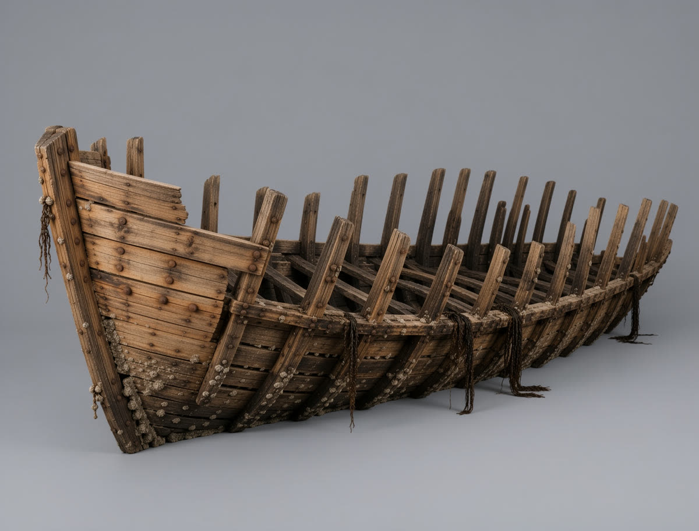
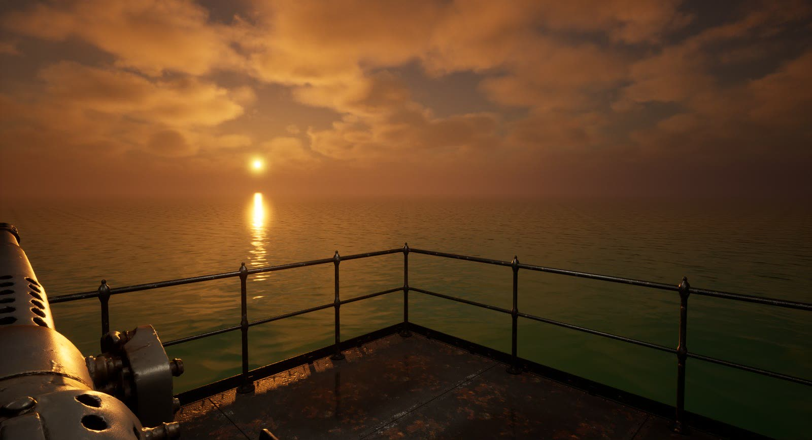
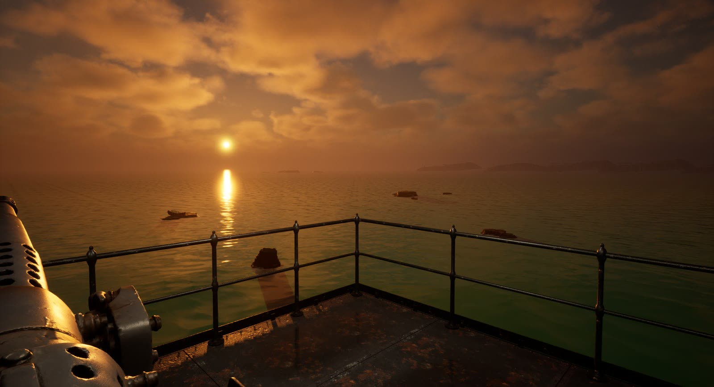

Day 2 Friday 13 November
All times in this log are Danish time (CET, UTC+1): 6 hours ahead of New York, 9 hours ahead of Los Angeles. Point at a time to see it in your own.
Friday evening: the first playable, the developer's notes as they came, and two things we got wrong
11 pictures 3 failures 14 min read
Checkpoint The first playable at 17:56; the finished game is due before midnight
This entry covers Friday from 17:45 to about 20:00. It was written at 20:03 from the lanes' notes and boards and the history of the main branch.
Back on another model, and the first playable at 17:56
At 17:30 every agent stopped at once (the last entry tells why). The lanes were started again on another model within minutes, and none of them had to be briefed from scratch. Each lane keeps a notes file with what it is doing, what is proven and what comes next, a board where the other lanes post faults and requests for it, and its own branch. A new agent read those and carried on where the old one stopped; the verifier's new agent was testing the main branch at 17:51. The same notes carried the integrator over its own limit later: its agent's context was full at 19:16, and a fresh agent took over from the notes at 19:17 without a gap in the merges.
The first playable was expected at 17:45 and was ready at 17:56. The package had failed in the cook twice that afternoon. The real fault, found after the restart: one of the engine's editor plugins, a registry of the tools the agents use to drive the editor, added a seed package of its own to every cook, even with the plugin marked editor-only. A rule in the game's own module that never cooks it fixed the cook. The Shipping game starts from a fresh unzip, carries none of the agents' editor tooling, and opens no network port.
What it held: the title, the furnished hut with the plan on its monitor, turrets bought and placed on the chart, the walk, the fight at the gallery gun (the laser from Night 2, the lens from Night 3), CUT and ACTION on the tablet, a held night back to the hut and a lost one back on TAKE 2; Nights 1 to 4 scripted with the mothership on Night 4, endless nights after. The integrator's note listed eight things that did not work yet; most of them are answered below. At 18:30 the verifier played the package as a stranger would: it unzipped, started and ran, and the freeze of about 400 ms when the first harvester appeared was gone (the game now loads its assets up front). In five minutes of play, apart from the launch, only one frame took longer than 100 ms: 126 ms during the walk.
The developer played, and kept sending notes
He played from about 18:00, sent notes as he went, and judged the pictures the lanes put on his screen. Retold in plain words, each with what it had become by 20:00:
- The map should look like a place, not a diagram. The plan lane now has the game paint the island's chart from the level's own heights: the rock in relief with contour lines, a bright shoreline, surf, the shallows in bands. On the live map the sea moves, every saucer draws a trail, each turret turns to its real target with a tracer line to it, the lamp's beam sweeps, and wrecks fall into the sea. An arrow shows where each group comes from and how many come along it; groups still far off stay quiet, and a mothership's outline is drawn inside the disc so the edge never cuts it.


- A hit should read in a fraction of a second. A white X for a hit on the hull, a red X with a red glow for a hit on a weak point, a diamond round the crosshair for a kill, a red diamond for a kill on a weak point. Words on the HUD now sit on a soft halo instead of a hard shadow, the lamp shows in ten cells, and the gun's heat is one crisp bar.


- Each station its own crosshair and tile. The three stations are compact tiles at the bottom, each marked with its own crosshair; the gun's tile says READY or HOT instead of a percentage.
- The great lens should be worth reaching. Until this evening it did nothing at all to a mothership. The stations lane made it burn a carrier's bays and a mothership's towers and open core on a steady tick, with a bloom of heat for the splash. It is aimed from inside the lantern room now, through a clear middle in the glass, with no bars across the target. At 19:30 the keeper's hands moved to the lens's brass grips from behind, backs of the hands toward him, the way a man pushes a heavy lens round.

- Get up from the PC before a night. At the hut's PC the keeper can now stand up, walk about the hut, go out of the door and round the rock, and the guide leads him back to the PC; nothing happens until he presses READY. Since 19:51 he walks round the things that stand on the rock instead of through them. The developer also asked to find the director's things lying about: the hut lane put a clapperboard, a megaphone, film cans, a film camera and a light stand into the hut. His verdict on the picture at 19:52: good, except that the megaphone and the clapperboard stand upright, which nobody would leave them doing. They are being laid down. Equipment on the rock and a large camera drone lying by the lighthouse are with the art and models lanes.


- Easy first, so a judge reaches the first mothership. A judge plays about ten minutes, and the first mothership comes on Night 4. A new game now asks how hard on three cards, with Easy first and already chosen. Credits are the same on every level; the score is multiplied. The cards are in the game; the numbers behind them are on the battle lane's branch and wait for the integrator.


- Settings as a page of their own. Settings are a screen with four tabs (controls, picture, sound, game) and the rows that were missing; a click starts the game, and the pause menu has three plain choices.


- The title is the name alone: FYR, with no subtitle and no line explaining the name.
- In the same hour the battle lane finished earlier notes: big ships stay where the gallery gun can reach them, the carrier falls in about five seconds, a hit on the lamp no longer turns the gun white, and dusk and clear nights come back after Night 4.
Two failures of the process
The theme, made quieter
At the developer's wish the film words are no longer shouted across the screen. CUT and ACTION are small, quiet stamps, the clapper's snap is softer, and the tablet's strip no longer prints the word. The theme is carried by what the player does: he stops the night, changes the plan, rolls on from the same frame, and takes a lost night again.
Decisions on tools
- Explosions from Blender simulations only. A new fireball recipe went in at 18:14 (uneven bursts, a turbulence field, clear hot gas), so the first frame of a kill is already a fireball; flak bursts are a small orange pop, and a wreck's trail is one unbroken smoke.


- No sound-effect model. The sound effects stay the game's own synthesis. ACE-Step was tried at 19:12 for the storm's long beds and gave music, not weather, so the storm is synthesised too: wind, rain on iron and the sea breaking in sets, each loop a different length so they never line up; thunder computed from the physics of a lightning channel; the bell, the boat, the radio, the tower's iron door and the lens turning. The storm and the music now duck under the gun and the blasts. ACE-Step stays for the music.
- Marigold V2 stays the tool for surfaces (normals and depth from our own seamless MOSS-Image pictures). Also from the materials lane this evening: the gun deck has worn paint over primer and rust with standing water and rain rings, the paving on the rock is old cast concrete, and the hut's stone and slate are back.
- Rodin in batches. At 19:04 the developer saw that few of the Rodin credits he gave FYR were being spent; he had expected many Rodin models in the game. Made one at a time by lanes with other work, they were too few: 73 jobs in all at 17:45. A lane of its own now makes the studio pictures in batches and sends ten to twelve Rodin jobs at once. Its first batch went out at 19:17: twelve jobs, seven of them new takes of models already in the game (the stove, the kettle, the barometer, a storm lantern, a bulkhead lamp, a buoy, a sea stack) and five new things for the hut (an oil lamp, a toolbox, a first-aid box, binoculars, a thermos). The pictures for a second batch of thirteen are made.
Planned for tonight
- The mothership's end. When its core is nearly gone, the keeper fires a rocket launcher by himself (it cannot be bought; it simply happens), the camera rides with the rocket to the ship, the ship breaks up in a run of blasts and falls into the sea, and the view returns to the gun. Space skips it, and a setting turns it off. The whole sequence has run end to end in the effects lane's tree since 19:07; the launcher and the rocket are stand-ins until the art lane's models come, and none of it is merged yet.


- Scenery round the rock. A reef with a wreck about 260 m out, an island with a ruined beacon at about 480 m, a low island with a fishing boat moored off it, and a far coast with pines three kilometres away. The models come from Rodin, each from a MOSS-Image studio picture. The first pass, at 19:32, built the islands from the rock's own ground pieces, and they read as cubes and rafts; so two more Rodin jobs at 19:35 made whole landforms instead (an island, a headland), and the second pass came at 19:53. Not merged yet.


PromptThe remains of an old wooden shipwreck on its own, seen from a three-quarter view from the front left at a slightly raised eye level: the…162 words
The remains of an old wooden shipwreck on its own, seen from a three-quarter view from the front left at a slightly raised eye level: the lower hull of a wooden sailing ship about fourteen metres long lying tilted on its side, the planking gone from most of it so that a row of curved blackened oak ribs stands up from the heavy keel like a rib cage, a stump of the stem post at the bow, a few lower planks still nailed on, rusted iron bolts, the timbers split, worn round by the sea, crusted with barnacles and hung with dark kelp. The whole wreck in frame with clear space around it, on a seamless plain mid-grey studio background, soft even diffuse studio lighting from all sides, no cast shadow on the background, no water, no sand, no ground, no other objects, photorealistic product photograph, natural colour, sharp. No text, no letters, no numbers, no logos, no brand names, no markings.


Before


After
- The film set behind the gun back in place. The director's things that used to stand behind the gallery gun are being put back by the art lane, well clear of the gun.
Attribution, and a start-up screen
FYR ships NVIDIA DLSS and Reflex, and NVIDIA's licence asks for its marks to be shown. The jam's rules allow no logos but the engine's, so the developer asked the jam's staff, and at 19:50 they confirmed that attribution a licence requires may be shown the way the rights owner describes, on a splash screen and in the credits too. The game gets a short start-up screen and a credits page for it, with the names in text, and NVIDIA's official artwork only if the developer supplies the file from NVIDIA himself. Nothing beyond what the licence asks.
The numbers since 17:45
Lines of game code went from 26,735 to 29,223, Rodin jobs from 73 to 126, synthesised sound effects from 203 to 264, and commits from 205 to 301. One lane was added (the Rodin batches), so sixteen in all. Pictures from the image model went from 416 to 572, and part of that jump is the count itself: it now also reads the prompt files on lanes' branches that are not merged yet, which it missed before.
Next
The developer plays the finished game before midnight. Every lane hands what it has proven to the integrator by 22:30; the final package of the night starts at 22:45 and is due by 23:15. Saturday is his day to play it, refine it and hand it in.